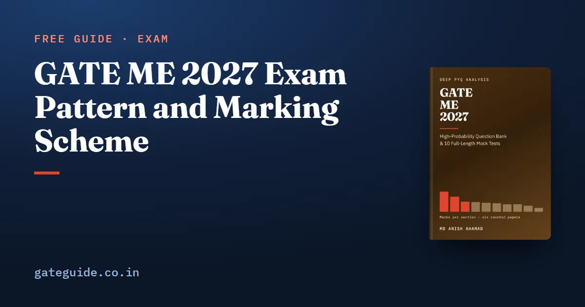

GATE ME 2027 Exam Pattern and Marking Scheme

The GATE ME paper is 65 questions for 100 marks: 15 marks of General Aptitude and 85 technical marks, of which Engineering Mathematics has been exactly 13. That shape held in all six counted papers from 2022 to 2026, set under five different institutes. This guide lays out the paper as those papers show it and teaches how each question type is marked.
In this guide
Key takeaways
- Every counted ME paper had 65 questions, 100 marks, 30 one-mark and 35 two-mark questions.
- General Aptitude is Q1 to Q10 and exactly 15 marks; the technical questions are Q11 to Q65.
- Engineering Mathematics was exactly 13 marks in nine questions in all six papers.
- Only MCQs carry negative marks: minus 1/3 for one mark and minus 2/3 for two.
- MSQ and NAT carry no negative marks; MSQ has no partial credit.
- Check the 2027 notification for anything that can change.
The words you need first
Three question types appear in GATE. A multiple-choice question (MCQ) has four options and one correct answer. A multiple-select question (MSQ) has four options and one or more correct answers. A numerical-answer type (NAT) question has no options; you type a number, and it scores if it falls inside the key's range.
A block is a run of questions with the same mark value. The ME paper is laid out in four blocks, and knowing them tells you what each question number is worth before you read it.
How the 100 marks are laid out
| Questions | Part | Marks each | Count | Marks |
|---|---|---|---|---|
| Q1 to Q5 | General Aptitude | 1 | 5 | 5 |
| Q6 to Q10 | General Aptitude | 2 | 5 | 10 |
| Q11 to Q35 | Technical | 1 | 25 | 25 |
| Q36 to Q65 | Technical | 2 | 30 | 60 |
| Total | 65 | 100 |
That layout was identical in all six counted papers. The official facts for GATE 2027 describe a three-hour computer-based test; confirm the duration and session for the ME paper in the current notification on the official site.
Remember: The last 30 questions are worth 60 marks. Leave enough time for them; they are where most marks sit.
Where the 85 technical marks have gone
General Aptitude and Engineering Mathematics are fixed. The rest is divided among nine subjects, and that division moves from paper to paper.
| Subject | Mean a year | Range over six papers |
|---|---|---|
| Materials, Manufacturing and Metrology | 17.4 | 14 to 21 |
| Engineering Mathematics | 13.0 | 13 to 13 |
| Thermodynamics and Applications | 8.8 | 7 to 11 |
| Mechanics of Materials | 8.4 | 6 to 15 |
| Fluid Mechanics | 7.8 | 6 to 10 |
| Heat Transfer | 7.4 | 5 to 9 |
| Industrial Engineering | 6.8 | 2 to 10 |
| Theory of Machines and Vibrations | 6.6 | 2 to 8 |
| Engineering Mechanics | 5.4 | 2 to 8 |
| Machine Design | 3.4 | 2 to 5 |
A mean a year averages the two 2022 sets first and then the five years, so 2022 does not count twice. Read the range beside every mean: your paper takes one value from it.
How each question type is marked
The rules below are common to every GATE paper, as the marking scheme guide, written for CSE but valid for ME, explains.
| Type | Correct | Wrong | Unattempted |
|---|---|---|---|
| MCQ, 1 mark | +1 | −1/3 | 0 |
| MCQ, 2 marks | +2 | −2/3 | 0 |
| MSQ | full marks only if every correct option and no wrong one is chosen | 0 | 0 |
| NAT | full marks if inside the key's range | 0 | 0 |
Worked example: scoring a block of two-mark MCQs
Suppose you attempt ten two-mark MCQs, get seven right and three wrong. The right ones earn marks. Each wrong one costs , so three cost marks. Your net is marks.
Now suppose you had left the three doubtful ones blank. You would score 14 on seven attempts and lose nothing. The three wrong answers cost you two marks you had already earned.
Trap: A wrong NAT costs nothing, so never leave a NAT blank once you have a number. A wrong MCQ does cost marks, so a pure guess on an MCQ is not free.
What the question-type mix has looked like
The mix of types changed more than any other feature of the paper.
| Paper | MCQ | MSQ | NAT |
|---|---|---|---|
| 2022 S1 | 35 | 6 | 24 |
| 2022 S2 | 35 | 6 | 24 |
| 2023 | 32 | 8 | 25 |
| 2024 | 39 | 2 | 24 |
| 2025 | 38 | 1 | 26 |
| 2026 | 45 | 0 | 20 |
All sixty General Aptitude questions across the six papers were MCQs, so every General Aptitude question carried negative marking. Every MSQ and NAT was in a technical subject. Between 20 and 26 NATs appeared in every paper; that is the fixed feature to train for.
In one line: Prepare for 20 to 26 NATs and a handful of MSQs or none, and practise typing exact answers on the GATE virtual calculator.
Using the layout on exam day
Because the blocks are fixed, you can plan your passes before you sit down. One workable order:
- Do General Aptitude first, Q1 to Q10. It is 15 marks, all MCQ in the counted papers, and needs no mechanical engineering.
- Sweep the one-mark technical block, Q11 to Q35, answering what you know at sight.
- Work the two-mark block, Q36 to Q65, starting with the NATs and MCQs in your strongest subjects.
- Return to the questions you marked for review, and leave any MCQ you would only be guessing.
The order is a judgement, not a rule. What the counts support is narrower: the two-mark block holds 60 of the 100 marks, and every NAT in it is free to attempt. Practise this order in full-length mocks so it is a habit before the day.
What can change, and where to check
The frame above is a pattern in six papers, not a published rule. The question count, mark split, negative marking and type mix can all be changed by the organisers. Before the exam, confirm the ME paper's pattern and session on the official site, and check your date on the GATE 2027 dates page. How raw marks become your GATE score is explained in the score calculation guide.
The paper-by-paper counts behind every number here, with every question cited by paper and number, are in the GATE ME 2027 book, along with ten full mocks in this 65-question pattern.
Quick revision
- 65 questions, 100 marks: 30 one-mark, 35 two-mark.
- Q1 to Q10 General Aptitude, 15 marks; Q11 to Q65 technical, 85 marks.
- Engineering Mathematics: 13 marks in nine questions in all six counted papers.
- MCQ: −1/3 or −2/3 for a wrong answer; MSQ and NAT: no negative marks.
- MSQ has no partial credit.
- NATs: 20 to 26 in every counted paper; never leave one blank.
- Materials, Manufacturing and Metrology was the largest technical subject every time.
- Confirm the 2027 pattern in the official notification.
Frequently asked questions
How many questions are there in the GATE ME paper?
Sixty-five questions for 100 marks, in all six counted papers from 2022 to 2026. Thirty carry one mark and thirty-five carry two. General Aptitude is the first ten questions and 15 marks; the technical questions run from Q11 to Q65 and carry 85 marks. Confirm the 2027 pattern in the official notification.
What is the negative marking in GATE ME?
Only multiple-choice questions carry a negative mark: minus one third for a wrong one-mark MCQ and minus two thirds for a wrong two-mark MCQ. Multiple-select and numerical-answer questions carry no negative marking. An unattempted question scores zero. The rule is common to every GATE paper, so check it again in the current notification.
How many marks is Engineering Mathematics in GATE ME?
Exactly 13 marks, in nine questions, five at one mark and four at two, in every one of the six counted papers from 2022 to 2026. With General Aptitude's 15, that is 28 marks that did not move by a single mark in five years. It is a pattern in the record, not a published rule.
Is there partial marking for MSQ in GATE ME?
No. A multiple-select question scores only if you select every correct option and no incorrect one. There is no partial credit and no negative mark. MSQs have become rare in the ME paper: 8 in 2023, then 2, 1 and none in 2026, but the format is still part of GATE.
Which subject carries the most marks in GATE ME?
Materials, Manufacturing and Metrology, in every one of the six counted papers, at 14 to 21 marks and a mean of 17.4 a year. General Aptitude's fixed 15 comes next on the means, then Engineering Mathematics at 13. These are counted from six papers and are history, not a forecast.
Sources
- GATE 2027 official website (IIT Madras)
- GATE 2026 ME question paper (IIT Guwahati)
- GATE 2026 ME answer key (IIT Guwahati)
Dates, fees and the syllabus are set by the GATE 2027 organising institute and can change. Always confirm at gate2027.iitm.ac.in.